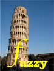

The 
DL System (see also latest changes)
- Javadoc (on-line)
- Specification of syntax and semantics of fuzzyDL constructs (pdf)
- Using fuzzyDL as java library (pdf)
- All the documents (zip)
- Related Pubblications:
- Fernando Bobillo and Umberto Straccia. fuzzyDL: An Expressive Fuzzy Description Logic Reasoner. In Proceedings of the 2008 International Conference on Fuzzy Systems (FUZZ-08) (pdf).
- Umberto Straccia. Multi-Criteria Decision Making in Fuzzy Description Logics: A First Step. In Prroceedings of the 13th International Conference on Knowledge-Based & Intelligent Information & Engineering Systems (KES-09), 2009.
Abstract . Bibitem . Paper . Slides
- Fernando Bobillo and Miguel Delgado and Juan Gomez-Romero and Umberto Straccia. Fuzzy Description Logics under Gödel Semantics. In International Journal of Approximate Reasoning, 2009
Abstract . Bibitem . Paper
- Fernando Bobillo and Umberto Straccia. Supporting Fuzzy Rough Sets in Fuzzy Description Logics. In Proceedings of the 10th European Conference on Symbolic and Quantitative Approaches to Reasoning with Uncertainty (ECSQARU-09), 2009.
Abstract . Bibitem . Paper . Slides
- Fernando Bobillo and Umberto Straccia. An OWL Ontology for Fuzzy OWL 2. In Proceedings of the 18th International Symposium on Methodologies for Intelligent Systems (ISMIS-09), 2009.
Abstract . Bibitem . Paper
- Thomas Lukasiewicz and Umberto Straccia. Managing Uncertainty and Vagueness in Description Logics for the Semantic Web. In Journal of Web Semantics, 2008.
Abstract . Bibitem . Paper
- Azzurra Ragone, Umberto Straccia, Fernando Bobillo, Tommaso Di Noia, Eugenio Di Sciascio and Francesco M. Donini. Fuzzy Description Logics for Bilateral Matchmaking in e-Marketplaces. In Proceedings of the 21st International Workshop on Description Logics (DL-08), 2008.
Abstract . Bibitem . Paper . Slides
- Fernando Bobillo and Umberto Straccia. Towards a Crisp Representation of Fuzzy Description Logics under Lukasiewicz semantics. In Proceedings of the 17th International Symposium on Methodologies for Intelligent Systems (ISMIS-08).
Abstract . Bibitem . Paper . Slides
- Fernando Bobillo and Umberto Straccia. A Fuzzy Description Logic with Product T-norm. In Proceedings of the IEEE International Conference on Fuzzy Systems (Fuzz-IEEE-07), 2007.
Abstract . Bibitem . Paper
- Umberto Straccia and Fernando Bobillo. Mixed Integer Programming, General Concept Inclusions and Fuzzy Description Logics. In Mathware & Soft Computing, 14(3), 2007.
Abstract . Bibitem . Paper
- Straccia, Umberto. A Fuzzy Description Logic for the Semantic Web. In Capturing Intelligence: Fuzzy Logic and the Semantic Web, Elie Sanchez, ed., Elsevier, 2006.
Abstract . Bibitem . Paper
- Stoilos, George and Straccia, Umberto and Stamou, George and Pan, Jeff. General Concept Inclusions in Fuzzy Description Logics. In Proceedings of the 17th Eureopean Conference on Artificial Intelligence (ECAI-06), 2006.
Abstract . Bibitem . Paper
- Straccia, Umberto. Description Logics with Fuzzy Concrete Domains. In Proceedings of the 21st Conference on Uncertainty in Artificial Intelligence (UAI-05), 2005.
Abstract . Bibitem . Paper
- Straccia, Umberto. Towards a Fuzzy Description Logic for the Semantic Web (Preliminary Report). In Proceedings of the 2nd European Semantic Web Conference (ESWC-05), 2005.
Abstract . Bibitem . Paper
- Straccia, Umberto. Transforming Fuzzy Description Logics into Classical Description Logics. In Proceeedings of the 9th European Conference on Logics in Artificial Intelligence (JELIA-04), 2004.
Abstract . Bibitem . Paper
- Straccia, Umberto. Reasoning within Fuzzy Description Logics . Journal of Artificial Intelligence Research, Vol. 14: 137-166, 2001.
Abstract . Bibitem . Paper
- Meghini, Carlo and Sebastiani, Fabrizio and Straccia, Umberto. A model of multimedia information retrieval. Journal of the ACM, 48 (5): 909-970, 2001.
Abstract . Bibitem . Paper